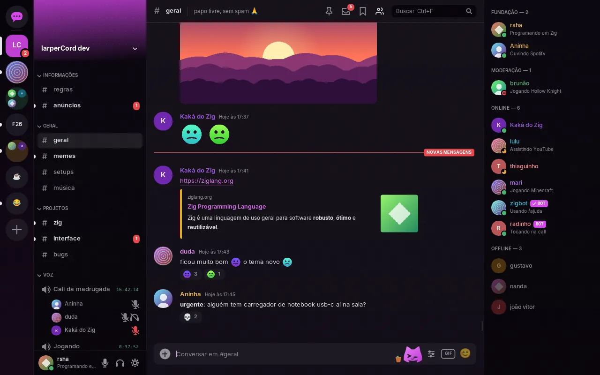

O Discord,sem o navegadordentro.
Um cliente nativo que fica perto de 130 MB de RAM com uma conta real e em 0% de CPU parado. A interface inteira é um arquivo de texto que você edita com o app aberto. Olha ela se reorganizando.
Leia antes: clientes de terceiros violam os Termos de Uso do Discord e a sua conta pode ser bloqueada, então use uma conta secundária. O modo demonstração não precisa de conta.
E esse é o app de verdade. Mesmos dados, mesmo binário:

- RAM, conta real
- ~130 MB
- CPU parado
- 0%
- temas
- 11
- electron
- 0
1.279 MB para dar bom dia.
Um cliente em Electron é um navegador inteiro fantasiado de app. Cada quadradinho é 5 MB de RAM.
| Vesktop (Electron) | Discord Phoenix (Rust) | larperCord | |
|---|---|---|---|
| RAM (PSS) | 1,279 MB | ~290 MB | ~130 MB com conta real |
| CPU parado | 12–47% | 0.1% | 0–0.4% |
| Binário em disco | 287 MB | não lançado | ~14 MB |
larperCord: 125–140 MB no uso normal de uma conta e cerca de 70 MB logo depois de abrir. O seu depende dos seus servidores, membros e imagens. O CPU parado foi medido nos 11 temas, com a reprodução automática de GIFs desligada, e um GIF animado na tela custa cerca de 2,5%. Cerca de 35 MB do PSS são o driver da NVIDIA, as bibliotecas e as fontes. Vesktop: média desde a abertura, medida com ps. Os dois no mesmo PC: Arch Linux, Hyprland, i5-2400S, GTX 1050 Ti, 1280×800. Discord Phoenix: não medido por nós e não é um teste lado a lado. É uma versão inicial para Windows 11, de um print do Gerenciador de Tarefas postado pelo CTO do Discord. Como foi medido →
A interface é um arquivo. Vai, quebra ele.
Estes são os layouts de verdade de themes/*.kdl. Mude uma largura, mova um nó, troque o nome de um componente. No app, salvar o arquivo recarrega a janela na hora (inotify no Linux, aviso de mudança na pasta no Windows). Um erro aponta arquivo:linha:coluna e o tema anterior continua na tela.
Referência completa da linguagem de temas →
}Onze temas. Não onze esquemas de cor.
Mesmo binário, mesmos dados, outro arquivo. Os componentes mudam de lugar, de forma e de variante. Passe o ponteiro por cima de um print para ver o modo claro. Clique para vestir esta página inteira com as cores dele (ou aperte F2, como no app).
Monte o seu no criador de temas →
}Fala com o gateway de verdade. É um cliente de verdade.
Tela dividida
Até três conversas lado a lado, cada uma com o histórico e a rolagem dela. A caixa de texto segue o painel em foco.

Threads e fóruns
As threads ficam abaixo do canal e abrem como qualquer conversa, com abas, rascunho e busca. Os fóruns mostram a lista de posts no lugar da conversa, com tags e “Novo post”.

Emoji e autocompletar
Emoji personalizado e figurinhas aparecem como imagem, animados inclusive. O seletor tem a lista Unicode inteira e os emojis dos seus servidores. Na caixa de texto,
@,#,:abe/abrem uma lista.
Leitura sincronizada
Não lidos e menções batem com o Discord ao abrir o app, e ler em outro aparelho limpa aqui. O canal abre na primeira não lida. As fixadas ficam no alfinete, e links do Discord abrem no app.

Caixa de entrada
Ctrl+I: DMs e menções não lidas de todos os servidores, por canal, com prévia e “marcar tudo como lido”.

Busca offline
Ctrl+F busca na memória e no cache local a cada tecla, sem internet. Filtros:
from:,in:,has:link,has:imagem,has:arquivo.
Paleta de comandos
Ctrl+K: busca aproximada de canais, DMs, servidores, temas, status e todas as opções. Esta página também tem uma. Experimente.

Vídeo na conversa
Anexos e links diretos tocam no lugar, com o FFmpeg, carregado só no primeiro play: o da distro no Linux, ou o botão Baixar FFmpeg em Configurações → Chat no Windows. Até 480p e cerca de 30 qps. Sem FFmpeg, o vídeo abre no navegador.

Código que parece código
Markdown do Discord, interpretado uma vez quando a mensagem chega. Blocos de código têm realce nas cores do tema e botão de copiar, e uma prévia aparece acima da caixa enquanto você digita.

Perfis completos
Banner, bio, atividade, amigos e servidores em comum, conexões, cargos e uma nota só sua.

Mensagens salvas, com anotação
Ctrl+Shift+S: favoritos que ficam só no seu computador. Nada vai para o Discord.

Alertas e filtros
Palavras de alerta contam como menção, o filtro recolhe mensagens, “ignorar” esconde alguém sem bloquear e o modo foco silencia tudo menos DMs e menções. Tudo local.

E o resto
Respostas, edição, reações, botão direito em tudo, seleção de texto entre mensagens, imagens e GIFs, calls em DM e grupo, botões e comandos de barra dos bots, enquetes, moderação, pastas de servidores, abas de canal, várias contas, rascunho por canal, proxy e Tor, inglês, português e japonês, árabe e hebraico, teclas de vim opcionais. Tour completo →

O que o larperCord tem e o app oficial não →
}Chamadas de verdade. Com criptografia de ponta a ponta.
aead_xchacha20_poly1305_rtpsize
- Mixer com um volume para cada pessoa. Cada pessoa é um stream de áudio próprio no mesmo dispositivo de saída.
- Sem call, sem custo. A thread de voz só nasce quando você entra. Antes disso, o áudio só abre se você entrar nas configurações de voz.
- Seu microfone, suas regras. Escolha os dispositivos, mesmo no meio da call. Detecção de voz com limiar automático ou aperte para falar, filtro passa-altas, porta de ruído e supressão de ruído com RNNoise, medidor ao vivo e teste de microfone.
- Limites sinceros. O aperte para falar só funciona com a janela em foco. Sem compartilhamento de tela nem câmera. Guia de voz →
Lua, numa jaula.
Coloque um .lua na sua pasta de plugins (~/.config/larpercord/plugins/ no Linux, %APPDATA%\larpercord\plugins\ no Windows) para somar painéis, entradas no botão direito, notas embaixo das mensagens, comandos e atalhos, sem recompilar nada. Anti-golpe, radar de CVE, cartões do GitHub, o que perdi, tradução, lembretes, destaques, links limpos, e links e arquivos vêm com o app.
-- @name CVE notes
-- @capabilities messages, decorate, http
-- @hosts cveawg.mitre.org
larper.on("message", function(msg)
local id = msg.content:upper():match("CVE%-%d+%-%d+")
if not id then return end
larper.http.get("https://cveawg.mitre.org/api/cve/" .. id, function(res)
local cve = res.ok and larper.json.decode(res.body)
local cna = cve and cve.containers and cve.containers.cna
if cna and cna.title then
larper.decorate(msg.id, { note = id .. ": " .. cna.title })
end
end)
end, { contains = { "cve-" } })- Numa thread só deles. Um plugin lento não engasga a interface. Sem plugin ligado, a thread nem existe.
- Sem arquivos, sem processos, sem sockets.
io,os.execute,require,loadedebugsimplesmente não existem. A única rede é HTTPS para hosts que você aprova um a um, sem o seu token nem cookies. - Cerca de 5 milhões de instruções por chamada. Um
while true do endé parado e não congela o app. Opcallnão segura esse erro. - 8 MB por plugin. Cada um roda num Lua separado. Depois de 10 erros, ele é parado.
larper.sendsó funciona a partir de um gesto seu. Responder sozinho transformaria a conta num self-bot, então isso é bloqueado de propósito. API de plugins →

Os dados são da demonstração, mas as notas de CVE e do GitHub são respostas de verdade desses serviços. Nada sai antes de você aprovar o host no cartão do plugin. O que cada um pede → · Comece o seu →
- Anti-golpe. Links de Nitro grátis,
dlscord-nitro.ru, endereços em outro alfabeto, um link que mostra um site e abre outro: tudo em vermelho. Roda no seu computador, sem rede. - Radar de CVE. Alguém escreve
CVE-2021-44228, e a severidade, a nota CVSS e um resumo aparecem embaixo da mensagem, vindos do registro oficial. - Cartões do GitHub.
dono/repo#123e links do GitHub ganham título, estado e estrelas. Um repositório renomeado aparece com o nome atual. - O que perdi.
/perdiresume as não lidas: quem falou, quem chamou você, que perguntas ficaram sem resposta, links e arquivos, com um clique até cada um.
Sem mágica. Dez decisões chatas.
- Dorme quando nada acontece. O laço principal espera em
SDL_WaitEvent. Rede, mudanças nos arquivos (inotify no Linux, avisos de pasta no Windows) e relógio acordam o app com eventos. Sem animação, sem redesenho. - Nada de navegador. Tudo é desenhado com o
ImDrawListdo Dear ImGui sobre o SDL_Renderer. - Fontes mapeadas, não copiadas. Cada arquivo de fonte é um mapa de memória (
mmapno Linux,MapViewOfFileno Windows) usado por todos os pesos, então só as páginas lidas ficam na RAM. - Só o driver de vídeo necessário. Em máquinas Linux só com GPU NVIDIA, o glvnd também carregaria o Mesa e o LLVM à toa. O app detecta e evita.
- Markdown interpretado uma vez. Quando a mensagem chega. Depois, a interface só faz layout dos trechos, com cache de altura por largura.
- Lista virtualizada. Busca binária pelo primeiro item visível e desenha só o que está na tela.
- Memória com teto. 1.500 mensagens por canal e 3.000 no total. Conversas esquecidas são descarregadas, e o cache de imagens tem um teto fixo de 64 MB.
- fontconfig liberado. Depois de resolver as fontes, no Linux:
FcFiniemalloc_trim. O Windows não tem fontconfig: as fontes vêm direto deC:\Windows\Fonts. - Sem cursor piscando. Um cursor piscando manteria a CPU acordada à toa.
- As coisas nascem quando você pede. A thread de voz na primeira call, o FFmpeg no primeiro vídeo. Sem plugin ligado, não há thread de plugins nem Lua, e nada se gasta por mensagem, tecla ou quadro.
A interface nunca muda dados direto. Ela só lê o Store e pede ações, e é por isso que trocar o gateway de demonstração pelo real não toca na interface. Arquitetura →
}O que funciona hoje. E o que não.
| Área | Estado | Detalhe |
|---|---|---|
| Mensagens, DMs, reações, respostas | funciona | Enviar, editar, excluir, histórico, menções, enquetes, opções de envio |
| Bots e apps | funciona | Botões, menus de seleção, formulários e comandos de barra |
| Imagens | funciona | Avatares e anexos, com cache de tamanho fixo |
| Vídeo na conversa | funciona | Anexos e links diretos. Precisa do FFmpeg: o da distro no Linux, o botão Baixar FFmpeg em Configurações → Chat no Windows |
| Caixa de entrada, salvas, busca offline | funciona | Tudo local, dá para desligar e apagar |
| Contas, proxy, plugins em Lua | funciona | Bloquear, amigos, silenciar, status e perfil sincronizados com a sua conta |
| Moderação | funciona | Expulsar, banir, castigar, silenciar e ensurdecer no servidor |
| Threads e fóruns | funciona | Threads aninhadas, lista de posts dos fóruns, criar threads e posts |
| Emoji personalizado, figurinhas, autocompletar | funciona | Animados inclusive. O seletor avisa quando um emoji precisa de Nitro |
| Leitura, fixadas, links do Discord | funciona | Sincronizada com os seus outros aparelhos |
| Temas | funciona | 11 embutidos, claro e escuro, recarregam ao salvar |
| Entrar em servidor por convite | funciona | Pelo cartão do convite, por link ou por código, com um aviso antes |
| Árabe, hebraico, outras escritas | parcial | Aparecem. Faltam digitar da direita para a esquerda na caixa de mensagem e a composição de escritas como o devanágari |
| Voz | parcial | Canais dos servidores e calls em DM e grupo, E2EE, mixer, seletor de dispositivo, aperte para falar e filtros funcionam. O aperte para falar precisa da janela em foco |
| Permissões | parcial | Canais trancados, voz, threads e fóruns são respeitados, e a caixa de mensagem diz por que você não pode enviar. As reações e a lista de membros ainda não consultam |
| Notificações | parcial | Pelo notify-send no Linux e pela bandeja no Windows. Clicar não abre o canal |
| Acessibilidade | parcial | Escala de fonte, reduzir movimento, paleta por teclado. Sem foco visível nem alto contraste |
| Plataformas | parcial | Linux e Windows 10/11. Testado todo dia no Arch com Hyprland; o Windows é novo. |
| Compartilhar tela e câmera | falta |
--demo, o app roda com dados falsos e não conecta em nada.
Baixe. Rode.
Não precisa de conta para dar uma olhada: o modo demonstração não conecta em nada. Depois ele se atualiza sozinho, e toda atualização é assinada.
Arch Linux AUR, x86_64
larpercord-bin no AUR →Também Manjaro, EndeavourOS e outras distros baseadas no Arch. O mesmo arquivo do download para Linux, instalado em /usr/bin com o ícone no menu:
yay -S larpercord-binparu -S larpercord-binAs atualizações vêm pelo seu ajudante do AUR.
Outras distros Linux x86_64
Um comando instala em ~/.local/bin com entrada no menu, sem sudo, e lista as bibliotecas que faltam:
curl -fsSL https://raw.githubusercontent.com/RshaCuDeVidro/larperCord/main/install.sh | shOu pegue o arquivo portátil. Ele roda em distros de 2022 para cá (glibc 2.34), e antes de cada versão é aberto em Ubuntu, Debian, Fedora, openSUSE e Arch. Marque como executável com chmod +x e rode. Ele pode ficar com esse nome: a atualização troca esse mesmo arquivo. Deixe-o numa pasta sua, como ~/.local/bin, para ele conseguir se atualizar.
Windows 10 / 11, x64
Baixar para Windows ↓Descompacte e abra o larpercord.exe da pasta larperCord, com as três DLLs ao lado dele. Descompacte num lugar onde você pode gravar, fora de C:\Program Files, para ele conseguir se atualizar. Ele ainda não tem assinatura de código: se o SmartScreen barrar, clique em Mais informações e depois em Executar assim mesmo.
Ou instale para o seu usuário, no PowerShell, sem administrador. Ele vai para %LOCALAPPDATA%\Programs\larperCord, com uma entrada no menu Iniciar:
irm https://raw.githubusercontent.com/RshaCuDeVidro/larperCord/main/install.ps1 | iexv0.6.5 · Todas as versões e checksums · O que mudou · Guia de instalação
}Três comandos. Sem conta.
# Arch Linux
sudo pacman -S zig sdl3 freetype2 fontconfig curl zlib libwebp opus openssl \
inter-font ttf-jetbrains-mono noto-fonts-emoji
# Compilar (Zig 0.17)
zig build -Doptimize=ReleaseFast
# Modo demonstração: dados falsos, não conecta em nada
./zig-out/bin/larpercord --demo --theme subsoloEsses comandos são para o Arch Linux. No Windows não tem o que compilar: baixe o zip, abra o larpercord.exe e escolha "Explorar o modo demonstração" na tela de login, ou abra com .\larpercord.exe --demo --theme subsolo. Prefere não compilar no Linux também? Baixe.
O mascote viu o seu uso de RAM. Não ficou impressionado.
Deixe o mascote cafeinado.
O larperCord é grátis e não tem anúncio. Ele roda com cerca de 130 MB de RAM. Quem desenvolve roda a café.